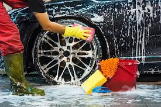
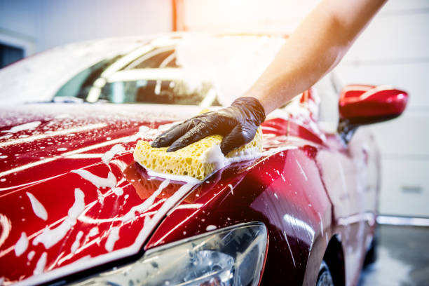

Passos para Lavar seu Carro

Passo 1: Preparação
Antes de começar, certifique-se de que o carro está em uma superfície plana. Reúna todos os materiais necessários, como balde, sabão para carros e toalhas de microfibra.

Passo 2: Lavagem da Carroceria
Use uma esponja macia e sabão específico para carros. Comece pela parte superior e vá descendo, evitando que a sujeira do fundo suba para as áreas já limpas.

Passo 3: Secagem e Acabamento
Após a lavagem, use uma toalha de microfibra para secar o carro. Isso evita manchas e ajuda a manter o brilho da pintura.